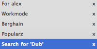
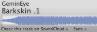

The Cloud Player
- Playlists right in your browser
 - Search for tracks, iTunes style

- And the crisp waveform is of course in

The Cloud Player let's you create playlists, fill them with your favorite tracks and share them with your friends, all using only a web browser and a Google account. Search for tracks or artists iTunes-style or just pick some from our hot list. Add them to a playlist by dragging them to the group of playlists on the left.


The Cloud Player was built by Eric Wahlforss & Henrik Berggren using Google App Engine, Python, jQuery, SoundManager 2 and the SoundCloud API. Do you want to contribute? Go ahead and fork from GitHub!
Here is a list of all features:
- Search and play all tracks from SoundCloud
- Save your favorites in playlists
- If you log in with your Google account your playlists will be saved for ever
- Send your ready made playlists to your friends
- Collaborate in making the best playlists ever
- Make smart playlists based on hot tracks, genres, BPM and more